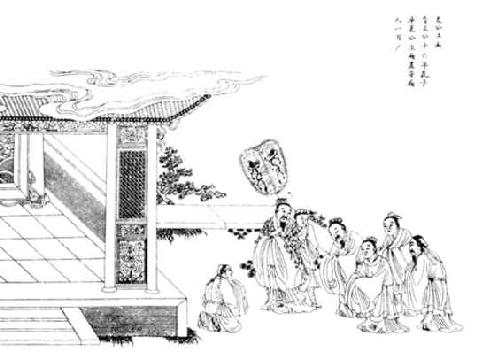
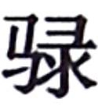
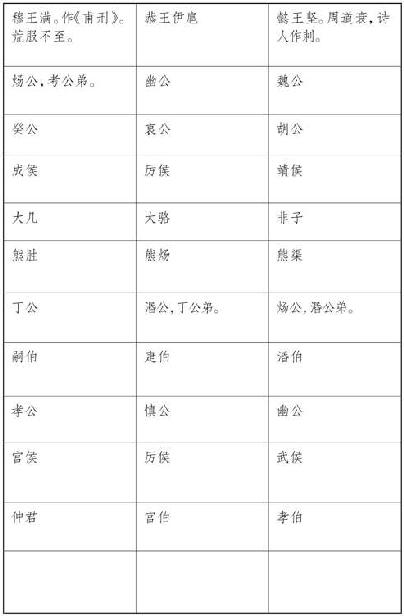

史记卷二十四
乐书第二
太史公 曰：余每读虞书 ，至于君臣相敕，维是几安，而股肱不良，万事堕坏，未尝不流涕也。成王 作颂，推己惩艾，悲彼家难，可不谓战战恐惧，善守善终哉？君子不为约则修德，满则弃礼，佚能思初，安能惟始，沐浴膏泽而歌咏勤苦，非大德谁能如斯！传 曰“治定功成，礼乐乃兴”。海内人道益深，其德益至，所乐者益异。满而不损则溢，盈而不持则倾。凡作乐者，所以节乐。君子以谦退为礼，以损减为乐，乐其如此也。以为州异国殊，情习不同，故博采风俗，协比声律，以补短移化，助流政教。天子躬于明堂临观，而万民咸荡涤邪秽，斟酌饱满，以饰厥性。故云雅颂 之音理而民正， 噭之声兴而士奋，郑卫 之曲动而心淫。及其调和谐合，鸟兽尽感，而况怀五常，含好恶，自然之势也？
治道亏缺而郑 音兴起，封君世辟，名显邻州，争以相高。自仲尼 不能与齐 优遂容于鲁 ，虽退正乐以诱世，作五章以刺时，犹莫之化。陵迟以至六国 ，流沔沉佚，遂往不返，卒于丧身灭宗，并国于秦 。
秦二世 尤以为娱。丞相李斯 进谏曰：“放弃诗书 ，极意声色，祖伊 所以惧也；轻积细过，恣心长夜，纣 所以亡也。”赵高 曰：“五帝 、三王 乐各殊名，示不相袭。上自朝廷，下至人民，得以接欢喜，合殷勤，非此和说不通，解泽不流，亦各一世之化，度时之乐，何必华山 之 耳而后行远乎？”二世 然之。
高祖 过沛 诗三侯之章 ，令小儿歌之。高祖 崩，令沛 得以四时歌舞宗庙。孝惠 、孝文 、孝景 无所增更，于乐府习常肄旧而已。
至今上即位，作十九章，令侍中李延年 次序其声，拜为协律都尉。通一经之士不能独知其辞，皆集会五经 家，相与共讲习读之，乃能通知其意，多尔雅之文。
汉家 常以正月上辛祠太一甘泉 ，以昏时夜祠，到明而终。常有流星经于祠坛上。使僮男僮女七十人俱歌。春歌青阳 ，夏歌朱明 ，秋歌西嗥 ，冬 歌玄冥 。世多有，故不论。
又尝得神马渥洼水
中，复次以为太一之歌
。歌曲曰：“太一
贡兮天马下，沾赤汗兮沫流赭。骋容与兮跇万里，今安匹兮龙为友。”后伐大宛
得千里马，马名蒲梢，次作以为歌。歌诗曰：“天马来兮从西极，经万里兮归有德。承灵威兮降外国，涉流沙兮四夷服。”中尉汲黯
进曰：“凡王者作乐，上以承祖宗，下以化兆民。今陛下得马，诗以为歌，协于宗庙，先帝百姓岂能知其音邪？”上默然不说。丞相公孙弘
曰：“黯
诽谤圣制，当族。”
凡音之起，由人心生也。人心之动，物使之然也。感于物而动，故形于声；声相应，故生变；变成方，谓之音；比音而乐之，及干戚羽旄，谓之乐也。乐者，音之所由生也，其本在人心感于物也。是故其哀心感者，其声噍以杀；其乐心感者，其声啴以缓；其喜心感者，其声发以散；其怒心感者，其声粗以厉；其敬心感者，其声直以廉；其爱心感者，其声和以柔。六者非性也，感于物而后动，是故先王慎所以感之。故礼以导其志，乐以和其声，政以壹其行，刑以防其奸。礼乐刑政，其极一也，所以同民心而出治道也。
凡音者，生人心者也。情动于中，故形于声，声成文谓之音。是故治世之音安以乐，其正和；乱世之音怨以怒，其正乖；亡国之音哀以思，其民困。声音之道，与正通矣。宫为君，商为臣，角为民，徵为事，羽为物。五者不乱，则无惉 之音矣。宫乱则荒，其君骄；商乱则捶，其臣坏；角乱则忧，其民怨；徵乱则哀，其事勤；羽乱则危，其财匮。五者皆乱，迭相陵，谓之慢。如此则国之灭亡无日矣。郑卫 之音，乱世之音也，比于慢矣。桑间濮上 之音，亡国之音也，其政散，其民流，诬上行私而不可止。
凡音者，生于人心者也；乐者，通于伦理者也。是故知声而不知音者，禽兽是也；知音而不知乐者，众庶是也。唯君子为能知乐。是故审声以知音，审音以知乐，审乐以知政，而治道备矣。是故不知声者不可与言音，不知音者不可与言乐。知乐则几于礼矣。礼乐皆得，谓之有德。德者得也。是故乐之隆，非极音也；食飨之礼，非极味也。清庙之瑟，朱弦而疏越，一倡而三叹，有遗音者矣。大飨之礼，尚玄酒而俎腥鱼，大羹不和，有遗味者矣。是故先王之制礼乐也，非以极口腹耳目之欲也，将以教民平好恶而反人道之正也。
人生而静，天之性也；感于物而动，性之颂也。物至知知，然后好恶形焉。好恶无节于内，知诱于外，不能反己，天理灭矣。夫物之感人无穷，而人之好恶无节，则是物至而人化物也。人化物也者，灭天理而穷人欲者
也。于是有悖逆诈伪之心，有淫佚作乱之事。是故强者胁弱，众者暴寡，知者诈愚，勇者苦怯，疾病不养，老幼孤寡不得其所，此大乱之道也。是故先王制礼乐，人为之节：衰麻哭泣，所以节丧纪也；钟鼓干戚，所以和安乐也；婚姻冠笄，所以别男女也；射乡食飨，所以正交接也。礼节民心，乐和民声，政以行之，刑以防之。礼乐刑政四达而不悖，则王道备矣。
乐者为同，礼者为异。同则相亲，异则相敬。乐胜则流，礼胜则离。合情饰貌者，礼乐之事也。礼义立，则贵贱等矣；乐文同，则上下和矣；好恶著，则贤不肖别矣；刑禁暴，爵举贤，则政均矣。仁以爱之，义以正之，如此则民治行矣。
乐由中出，礼自外作。乐由中出，故静；礼自外作，故文。大乐必易，大礼必简。乐至则无怨，礼至则不争。揖让而治天下者，礼乐之谓也。暴民不作，诸侯宾服，兵革不试，五刑不用，百姓无患，天子不怒，如此则乐达矣。合父子之亲，明长幼之序，以敬四海之内。天子如此，则礼行矣。
大乐与天地同和，大礼与天地同节。和，故百物不失；节，故祀天祭地。明则有礼乐，幽则有鬼神，如此则四海之内合敬同爱矣。礼者，殊事合敬者也；乐者，异文合爱者也。礼乐之情同，故明王以相沿也。故事与时并，名与功偕。故钟鼓管磬羽籥干戚，乐之器也；诎信俯仰级兆舒疾，乐之文也。簠簋俎豆制度文章，礼之器也；升降上下周旋裼袭，礼之文也。故知礼乐之情者能作，识礼乐之文者能术。作者之谓圣，术者之谓明。明圣者，术作之谓也。
乐者，天地之和也；礼者，天地之序也。和，故百物皆化；序，故群物皆别。乐由天作，礼以地制。过制则乱，过作则暴。明于天地，然后能兴礼乐也。论伦无患，乐之情也；欣喜欢爱，乐之官也。中正无邪，礼之质也；庄敬恭顺，礼之制也。若夫礼乐之施于金石，越于声音，用于宗庙社稷，事于山川鬼神，则此所以与民同也。
王者功成作乐，治定制礼。其功大者其乐备，其治辨者其礼具。干戚之舞，非备乐也；亨孰而祀，非达礼也。五帝 殊时，不相沿乐；三王 异世，不相袭礼。乐极则忧，礼粗则偏矣。及夫敦乐而无忧，礼备而不偏者，其唯大圣乎？天高地下，万物散殊，而礼制行也；流而不息，合同而化，而乐兴也。春作夏长，仁也；秋敛冬藏，义也。仁近于乐，义近于礼。乐者敦和，率神而从天；礼者辨宜，居鬼而从地。故圣人作乐以应天，作礼以配地。礼乐明备，天地官矣。
天尊地卑，君臣定矣。高卑已陈，贵贱位矣。动静有常，大小殊矣。方以类聚，物以群分，则性命不同矣。在天成象，在地成形，如此则体者天地之别也。地气上 ，天气下降，阴阳相摩，天地相荡，鼓之以雷霆，奋之以风雨，动之以四时，暖之以日月，而百化兴焉，如此则乐者天地之和也。
，天气下降，阴阳相摩，天地相荡，鼓之以雷霆，奋之以风雨，动之以四时，暖之以日月，而百化兴焉，如此则乐者天地之和也。
化不时则不生，男女无别则乱登，此天地之情也。及夫礼乐之极乎天而蟠乎地，行乎阴阳而通乎鬼神，穷高极远而测深厚，乐著太始而礼居成物。著不息者天也，著不动者地也。一动一静者，天地之间也。故圣人曰“礼云乐云”。
昔者舜 作五弦之琴，以歌南风 ；夔 始作乐，以赏诸侯。故天子之为乐也，以赏诸侯之有德者也。德盛而教尊，五谷时孰，然后赏之以乐。故其治民劳者，其舞行级远；其治民佚者，其舞行级短。故观其舞而知其德，闻其谥而知其行。大章 ，章之也；咸池 ，备也；韶 ，继也；夏 ，大也；殷周 之乐尽也。
天地之道，寒暑不时则疾，风雨不节则饥。教者，民之寒暑也，教不时则伤世。事者，民之风雨也，事不节则无功。然则先王之为乐也，以法治也，善则行象德矣。夫豢豕为酒，非以为祸也；而狱讼益烦，则酒之流生祸也。是故先王因为酒礼，一献之礼，宾主百拜，终日饮酒而不得醉焉，此先王之所以备酒祸也。故酒食者，所以合欢也。
乐者，所以象德也；礼者，所以闭淫也。是故先王有大事，必有礼以哀之；有大福，必有礼以乐之：哀乐之分，皆以礼终。
乐也者，施也；礼也者，报也。乐，乐其所自生；而礼，反其所自始。乐章德，礼报情反始也。所谓大路者，天子之舆也；龙旗九旒，天子之旌也；青黑缘者，天子之葆龟也；从之以牛羊之群，则所以赠诸侯也。”
乐也者，情之不可变者也；礼也者，理之不可易者也。乐统同，礼别异，礼乐之说贯乎人情矣。穷本知变，乐之情也；著诚去伪，礼之经也。礼乐顺天地之诚，达神明之德，降兴上下之神，而凝是精粗之体，领父子君臣之节。
是故大人举礼乐，则天地将为昭焉。天地欣合，阴阳相得，煦妪覆育万物，然后草木茂，区萌达，羽翮奋，角觡生，蛰虫昭稣，羽者妪伏，毛者孕鬻，胎生者不㱩而卵生者不殈，则乐之道归焉耳。
乐者，非谓黄钟大吕弦歌干扬也，乐之末节也，故童者舞之；布筵席，陈樽俎，列笾豆，以升降为礼者，礼之末节也，故有司掌之。乐师辩乎声诗，故北面而弦；宗祝辩乎宗庙之礼，故后尸；商 祝辩乎丧礼，故后主人。 是故德成而上，艺成而下；行成而先，事成而后。是故先王有上有下，有先有后，然后可以有制于天下也。
乐者，圣人之所乐也，而可以善民心。其感人深，其风移俗易，故先王著其教焉。
夫人有血气心知之性，而无哀乐喜怒之常，应感起物而动，然后心术形焉。是故志微焦衰之音作，而民思忧；啴缓慢易繁文简节之音作，而民康乐；粗厉猛起奋末广贲之音作，而民刚毅；廉直经正庄诚之音作，而民肃敬；宽裕肉好顺成和动之音作，而民慈爱；流辟邪散狄成涤滥之音作，而民淫乱。
是故先王本之情性，稽之度数，制之礼义，合生气之和，道五常之行，使之阳而不散，阴而不密，刚气不怒，柔气不慑，四畅交于中而发作于外，皆安其位而不相夺也。然后立之学等，广其节奏，省其文采，以绳德厚也。类小大之称，比终始之序，以象事行，使亲疏贵贱长幼男女之理皆形见于乐：故曰“乐观其深矣”。
土敝则草木不长，水烦则鱼鳖不大，气衰则生物不育，世乱则礼废而乐淫。是故其声哀而不庄，乐而不安，慢易以犯节，流湎以忘本。广则容奸，狭则思欲，感涤荡之气而灭平和之德，是以君子贱之也。
凡奸声感人而逆气应之，逆气成象而淫乐兴焉。正声感人而顺气应之，顺气成象而和乐兴焉。倡和有应，回邪曲直各归其分，而万物之理以类相动也。
是故君子反情以和其志，比类以成其行。奸声乱色不留聪明，淫乐废礼不接于心术，惰慢邪辟之气不设于身体，使耳目鼻口心知百体皆由顺正，以行其义。然后发以声音，文以琴瑟，动以干戚，饰以羽旄，从以箫管，奋至德之光，动四气之和，以著万物之理。是故清明象天，广大象地，终始象四时，周旋象风雨；五色成文而不乱，八风从律而不奸，百度得数而有常；小大相成，终始相生，倡和清浊，代相为经。故乐行而伦清，耳目聪明，血气和平，移风易俗，天下皆宁。故曰“乐者乐也”。君子乐得其道，小人乐得其欲。以道制欲，则乐而不乱；以欲忘道，则惑而不乐。是故君子反情以和其志，广乐以成其教，乐行而民乡方，可以观德矣。
德者，性之端也；乐者，德之华也；金石丝竹，乐之器也。诗，言其志也；歌，咏其声也；舞，动其容也：三者本乎心，然后乐气从之。是故情深而文明，气盛而化神，和顺积中而英华发外，唯乐不可以为伪。
乐者，心之动也；声者，乐之象也；文采节奏，声之饰也。君子动其本，
乐其象，然后治其饰。是故先鼓以警戒，三步以见方，再始以著往，复乱以饬归，奋疾而不拔，极幽而不隐。独乐其志，不厌其道；备举其道，不私其欲。是以情见而义立，乐终而德尊；君子以好善，小人以息过：故曰“生民之道，乐为大焉”。
君子曰：礼乐不可以斯须去身。致乐以治心，则易直子谅之心油然生矣。易直子谅之心生则乐，乐则安，安则久，久则天，天则神。天则不言而信，神则不怒而威。致乐，以治心者也；致礼，以治躬者也。治躬则庄敬，庄敬则严威。心中斯须不和不乐，而鄙诈之心入之矣；外貌斯须不庄不敬，而慢易之心入之矣。故乐也者，动于内者也；礼也者，动于外者也。乐极和，礼极顺。内和而外顺，则民瞻其颜色而弗与争也，望其容貌而民不生易慢焉。德 动乎内而民莫不承听，理发乎外而民莫不承顺，故曰“知礼乐之道，举而错之天下无难矣”。
动乎内而民莫不承听，理发乎外而民莫不承顺，故曰“知礼乐之道，举而错之天下无难矣”。
乐也者，动于内者也；礼也者，动于外者也。故礼主其谦，乐主其盈。礼谦而进，以进为文；乐盈而反，以反为文。礼谦而不进，则销；乐盈而不反，则放。故礼有报而乐有反。礼得其报则乐，乐得其反则安。礼之报，乐之反，其义一也。
夫乐者乐也，人情之所不能免也。乐必发诸声音，形于动静，人道也。声音动静，性术之变，尽于此矣。故人不能无乐，乐不能无形。形而不为道，不能无乱。先王恶其乱，故制雅颂 之声以道之，使其声足以乐而不流，使其文足以纶而不息，使其曲直繁省廉肉节奏，足以感动人之善心而已矣，不使放心邪气得接焉，是先王立乐之方也。是故乐在宗庙之中，君臣上下同听之，则莫不和敬；在族长乡里之中，长幼同听之，则莫不和顺；在闺门之内，父子兄弟同听之，则莫不和亲。故乐者，审一以定和，比物以饰节，节奏合以成文，所以合和父子君臣，附亲万民也，是先王立乐之方也。故听其雅颂 之声，志意得广焉；执其干戚，习其俯仰诎信，容貌得庄焉；行其缀兆，要其节奏，行列得正焉，进退得齐焉。故乐者天地之齐，中和之纪，人情之所不能免也。
夫乐者，先王之所以饰喜也；军旅铁钺者，先王之所以饰怒也。故先王之喜怒皆得其齐矣。喜则天下和之，怒则暴乱者畏之。先王之道礼乐可谓盛矣。
魏文侯 问于子夏 曰：“吾端冕而听古乐则唯恐卧，听郑卫 之音则不知 倦。敢问古乐之如彼，何也？新乐之如此，何也？”
子夏 答曰：“今夫古乐，进旅而退旅，和正以广，弦匏笙簧合守拊鼓，始奏以文，止乱以武，治乱以相，讯疾以雅。君子于是语，于是道古，修身及家，平均天下：此古乐之发也。今夫新乐，进俯退俯，奸声以淫，溺而不止，及优侏儒，猱杂子女，不知父子。乐终不可以语，不可以道古：此新乐之发也。今君之所问者乐也，所好者音也。夫乐之与音，相近而不同。”
文侯曰：“敢问如何？”
子夏 答曰：“夫古者天地顺而四时当，民有德而五谷昌，疾疢不作而无祆祥，此之谓大当。然后圣人作为父子君臣以为之纪纲，纪纲既正，天下大定，天下大定，然后正六律，和五声，弦歌诗颂 ，此之谓德音，德音之谓乐。诗 曰：‘莫其德音，其德克明，克明克类，克长克君。王此大邦，克顺克俾。俾于文王 ，其德靡悔。既受帝祉，施于孙子。’此之谓也。今君之所好者，其溺音与？”
文侯 曰：“敢问溺音者何从出也？”
子夏
答曰：“郑
音好滥淫志，宋
音燕女溺志，卫
音趣数烦志，齐
音骜辟骄志，四者皆淫于色而害于德，是以祭祀不用也。诗
曰：‘肃雍和鸣，先祖是听。’夫肃肃，敬也；雍雍，和也。夫敬以和，何事不行？为人君者，谨其所好恶而已矣。君好之则臣为之，上行之则民从之。诗
曰‘诱民孔易’，此之谓也。然后圣人作为鞉鼓控楬埙篪，此六者，德音之音也。然后钟磬竽瑟以和之，干戚旄狄以舞之。此所以祭先王之庙也，所以献酬酳酢也，所以官序贵贱各得其宜也，此所以示后世有尊卑长幼序也。钟声铿，铿以立号，号以立横，横以立武。君子听钟声则思武臣。石声硁，硁以立别，别以致死。君子听磬声则思死封疆之臣。丝声哀，哀以立廉，廉以立志。君子听琴瑟之声则思志义之臣。竹声滥，滥以立会，会以聚众。君子听竽笙箫管之声则思畜聚之臣。鼓鼙之声欢，欢以立动，动以进众。君子听鼓鼙之声则思将帅之臣。君子之听音，非听其铿锵而已也，彼亦有所合之也。”
宾牟贾 侍坐于孔子 ，孔子 与之言，及乐，曰：“夫武 之备戒之已久，何也？”
答曰：“病不得其众也。”
“永叹之，淫液之，何也？”
答曰：“恐不逮事也。”
“发扬蹈厉之已蚤，何也？”
“武 坐致右宪左，何也？”
答曰：“非武坐也。”
“声淫及商 ，何也？”
答曰：“非武 音也。”
子曰：“若非武 音，则何音也？”
答曰：“有司失其传也。如非有司失其传，则武王 之志荒矣。”
子曰：“唯丘 之闻诸苌弘 ，亦若吾子之言是也。”
宾牟贾 起，免席而请曰：“夫武 之备戒之已久，则既闻命矣。敢问迟之迟而又久，何也？”
子曰：“居，吾语汝。夫乐者，象成者也。总干而山立，武王
之事也；发扬蹈厉，太公
之志也；武乱皆坐，周召
之治也。且夫武
，始而北出，再成而灭商
，三成而南，四成而南国是疆，五成而分陕
，周公
左，召公
右，六成复缀，以崇天子，夹振之而四伐，盛威于中国也。分夹而进，事蚤济也。久立于缀，以待诸侯之至也。且夫女独未闻牧野
之语乎？武王
克殷
反商
，未及下车，而封黄帝
之后于蓟
，封帝尧
之后于祝
，封帝舜
之后于陈
；下车而封夏后氏
之后于杞
，封殷
之后于宋
，封王子比干
之墓，释箕子
之囚，使之行商容
而复其位。庶民弛政，庶士倍禄。济河
而西，马散华山
之阳而弗复乘；牛散桃林
之野而不复服；车甲弢而藏之府库而弗复用；倒载干戈，苞之以虎皮；将率之士，使为诸侯，名之曰‘建橐’：然后天下知武王
之不复用兵也。散军而郊射，左射狸首
，右射驺虞
，而贯革之射息也；裨冕搢笏，而虎贲之士税剑也；祀乎明堂，而民知孝；朝觐，然后诸侯知所以臣；耕藉，然后诸侯知所以敬：五者天下之大教也。食三老五更于太学，天子袒而割牲，执酱而馈，执爵而酳，冕而总干，所以教诸侯之悌也。若此，则周
道四达，礼乐交通，则夫武
之迟久，不亦宜乎？”
子 贡见师乙 而问焉，曰：“赐 闻声歌各有宜也，如赐 者宜何歌也？”
师乙
曰：“乙
，贱工也，何足以问所宜。请诵其所闻，而吾子自执焉。宽而静，柔而正者宜歌颂
；广大而静，疏达而信者宜歌大雅
；恭俭而好礼者宜歌小雅
；正直清廉而谦者宜歌风
；肆直而慈爱者宜歌商
；温良而能断者宜歌齐
。夫歌者，直己而陈德；动己而天地应焉，四时和焉，星辰理焉，万物育焉。故商
者，五帝
之遗声也，商
人志之，故谓之商
；齐
者，三代
之遗声也，齐
人志之，故谓之齐
。明乎商
之诗者，临事而屡断；明乎齐
之诗者，见
利而让也。临事而屡断，勇也；见利而让，义也。有勇有义，非歌孰能保此？故歌者，上如抗，下如队，曲如折，止如槁木，居中矩，句中钩，累累乎殷如贯珠。故歌之为言也，长言之也。说之，故言之；言之不足，故长言之；长言之不足，故嗟叹之；嗟叹之不足，故不知手之舞之足之蹈之。”子贡问乐
。
凡音由于人心，天之与人有以相通，如景之象形，响之应声。故为善者天报之以福，为恶者天与之以殃，其自然者也。
故舜 弹五弦之琴，歌南风 之诗而天下治；纣 为朝歌 北鄙之音，身死国亡。舜 之道何弘也？纣 之道何隘也？夫南风 之诗者生长之音也，舜 乐好之，乐与天地同意，得万国之欢心，故天下治也。夫朝歌 者不时也，北者败也，鄙者陋也，纣 乐好之，与万国殊心，诸侯不附，百姓不亲，天下畔之，故身死国亡。
而卫灵公 之时，将之晋 ，至于濮水 之上舍。夜半时闻鼓琴声，问左右，皆对曰“不闻”。乃召师涓 曰：“吾闻鼓琴音，问左右，皆不闻。其状似鬼神，为我听而写之。”师涓 曰：“诺。”因端坐援琴，听而写之。明日，曰：“臣得之矣，然未习也，请宿习之。”灵公 曰：“可。”因复宿。明日，报曰：“习矣。”即去之晋 ，见晋平公 。平公 置酒于施惠之台 。酒酣，灵公 曰：“今者来，闻新声，请奏之。”平公 曰：“可。”即令师涓 坐师旷 旁，援琴鼓之。未终，师旷 抚而止之曰：“此亡国之声也，不可遂。”平公 曰：“何道出？”师旷 曰：“师延 所作也。与纣 为靡靡之乐，武王 伐纣 ，师延 东走，自投濮水 之中，故闻此声必于濮水 之上，先闻此声者国削。”平公 曰：“寡人所好者音也，愿遂闻之。”师涓 鼓而终之。
平公 曰：“音无此最悲乎？”师旷 曰：“有。”平公 曰：“可得闻乎？”师旷 曰：“君德义薄，不可以听之。”平公 曰：“寡人所好者音也，愿闻之。”师旷 不得已，援琴而鼓之。一奏之，有玄鹤二八集乎廊门；再奏之，延颈而鸣，舒翼而舞。
平公 大喜，起而为师旷 寿。反坐，问曰：“音无此最悲乎？”师旷 曰：“有。昔者黄帝 以大合鬼神，今君德义薄，不足以听之，听之将败。”平公 曰：“寡人老矣，所好者音也，愿遂闻之。”师旷 不得已，援琴而鼓之。一奏之，有白云从西北起；再奏之，大风至而雨随之，飞廊瓦，左右皆奔走。平公 恐惧，伏于廊屋之间。晋国 大旱，赤地三年。
听者或吉或凶。夫乐不可妄兴也。
太史公 曰：夫上古明王举乐者，非以娱心自乐，快意恣欲，将欲为治也。正教者皆始于音，音正而行正。故音乐者，所以动荡血脉，通流精神而和正心也。故宫动脾而和正圣，商动肺而和正义，角动肝而和正仁，徵动心而和正礼，羽动肾而和正智。故乐所以内辅正心而外异贵贱也；上以事宗庙，下以变化黎庶也。琴长八尺一寸，正度也。弦大者为宫，而居中央，君也。商张右傍，其馀大小相次，不失其次序，则君臣之位正矣。故闻宫音，使人温舒而广大；闻商音，使人方正而好义；闻角音，使人恻隐而爱人；闻徵音，使人乐善而好施；闻羽音，使人整齐而好礼。夫礼由外入，乐自内出。故君子不可须臾离礼，须臾离礼则暴慢之行穷外；不可须臾离乐，须臾离乐则奸邪之行穷内。故乐音者，君子之所养义也。夫古者，天子诸侯听钟磬未尝离于庭，卿大夫听琴瑟之音未尝离于前，所以养行义而防淫佚也。夫淫佚生于无礼，故圣王使人耳闻雅颂 之音，目视威仪之礼，足行恭敬之容，口言仁义之道。故君子终日言而邪辟无由入也。